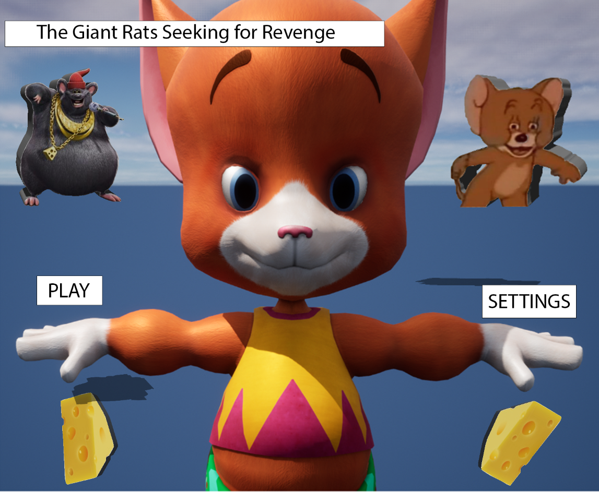
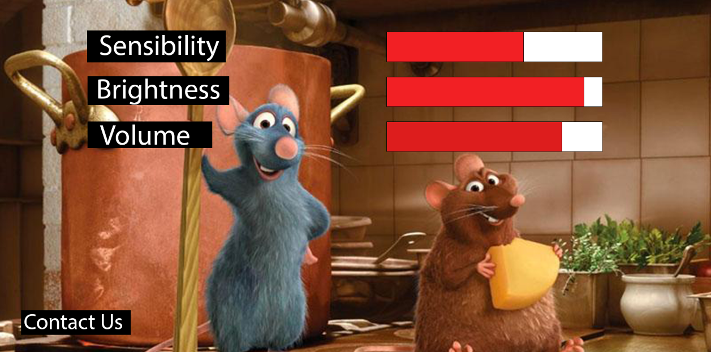
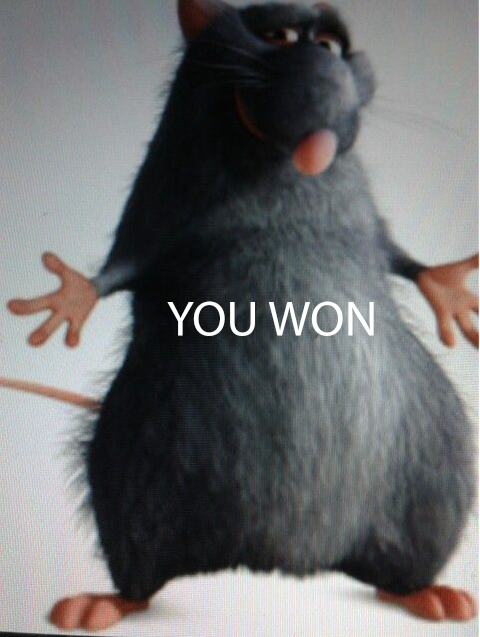
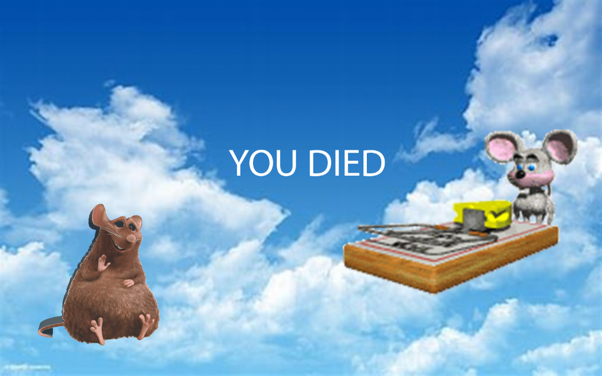

 This menu was inspired in rats, and more inspired in the movie ratatouille and tom and jerry as well, to make the menu more for kids, I chose to create something more cartoon, to get the attention of everyone. I decided to make this idea of rats inspired in the movie rataouille because the movie is about a rat named Remy dreams of becoming a great French chef despite his family's wishes and the obvious problem of being a rat in a decidedly rodent-phobic profession. When fate places Remy in the sewers of Paris, he finds himself ideally situated beneath a restaurant made famous by his culinary hero, Auguste Gusteau. Despite the apparent dangers of being an unlikely, and certainly unwanted, visitor in the kitchen of a fine French restaurant, Remy's passion for cooking soon sets into motion a hilarious and exciting rat race that turns the culinary world of Paris upside down.
 I create the settings similar to the settings in the game flushed away, this game is about the movie flushed away which the story is about a rat named Roddy who is a decidedly upper-crust "society mouse" who lives the life of a beloved pet in a posh Kensington flat. When a sewer rat named Sid comes spewing out of the sink and decides he's hit the jackpot, Roddy schemes to rid himself of the pest by luring him into the "whirlpool." Sid may be an ignorant slob, but he's no fool, so it is Roddy who winds up being flushed away into the bustling sewer world of Ratropolis. There Roddy meets Rita, an enterprising scavenger who works the sewers in her faithful boat, the Jammy Dodger. Roddy immediately wants out, or rather, up; Rita wants to be paid for her trouble; and, speaking of trouble, the villainous Toad - who royally despises all rodents equally, making no distinction between mice and rats--wants them iced... literally. The Toad dispatches his two hapless hench-rats, Spike and Whitey, to get the job done. When they fail, the Toad has no choice but to send to France for his cousin - that dreaded mercenary, Le Frog.
 This picture is ratatouille's dad and I choosed to make this picture appear when you win the game, because in the movie ratatouille, the rat ratatouille is the entire movie trying to make his dad proud of him, so in the end when he did it, it counted as a win, so this is why I created this image when you win the game.
 And finally the last one, the you died image, there's nothing better to show when you die in the game of rats than a mousetrap, and the sky in the background just to make a sense of certainly dead